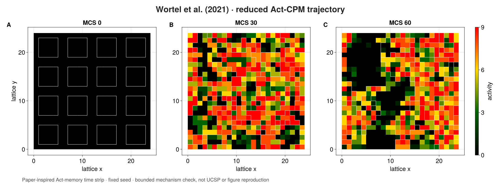
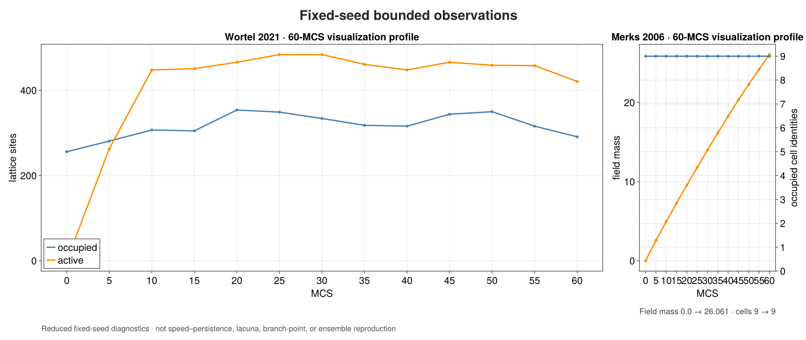

Wortel 2021
Content class: qualified source-bounded case study. Support level: qualified unpublished internal beta.
Outcome. Assemble the reduced Wortel activity-CPM mechanism from ordinary PottsToolkit declarations, execute it through an explicit ProcessBigraph, and record a typed bounded-state summary.
Prerequisites. Your first multirate composite, write components, and familiarity with Cellular Potts models.
Source and accepted profile
Source: Wortel et al. (2021), DOI 10.1016/j.bpj.2021.04.036. The traced mechanism is the geometric Act memory term with a Moore neighborhood and explicit activity parameters.
| Choice | Reduced docs profile |
|---|---|
| Domain | 24×24 lattice |
| Initial cells | deterministic 4×4 blocks |
| Activity | maximum 10, strength 20 |
| Volume | target 16, strength 1 |
| Temperature | 20 |
| CPM budget | one attempt per site per MCS |
| Observation cadence | 2 MCS |
| Horizon | 4 MCS |
| Seed | 0x7068617365313403 |
| Backend | CPU |
Deviations are the reduced domain, short horizon, and documentation seed.
Complete executed source
This is the entire program. The biological declarations, initialization, Act mechanism, ProcessBigraph stores, component, bindings, schedule, observer, runtime, and assertions are all visible and evaluated.
using PottsToolkit
import CorePotts
import ProcessBigraphs as PB
import SciMLBase
const WORTEL_SOURCE_DOI = "10.1016/j.bpj.2021.04.036"
const WORTEL_SEMANTIC_VERSION = "1.0.0"
profile = (
identity=:reduced_cpu,
dimensions=(24, 24),
cell_side=4,
maximum_activity=10.0f0,
activity_strength=20.0f0,
volume_strength=1.0f0,
temperature=20.0f0,
observation_every=2,
mcs=4,
seed=UInt64(0x7068617365313403),
)
medium = Medium(:extracellular)
cell = CellType(:endothelial)
potts_model = PottsModel(
medium,
cell,
Volume(
cell => (
target=Float32(profile.cell_side^2),
strength=profile.volume_strength,
),
),
Adhesion(PairwiseLaw(
:contact_energy,
(medium, medium) => 0.0f0,
(medium, cell) => 6.0f0,
(cell, cell) => 2.0f0,
)),
)
activity = Act(
maximum_activity=profile.maximum_activity,
strength=profile.activity_strength,
neighborhood=CorePotts.MooreTopology{2}(),
spacing=(1.0f0, 1.0f0),
algorithm=BudgetedSequentialCPM(
AttemptsPerSite(1);
temperature=profile.temperature,
),
observation_every=profile.observation_every,
)
function initial_wortel_labels(profile)
labels = zeros(UInt64, profile.dimensions)
pitch = profile.cell_side + 2
identity = UInt64(0)
for y in 2:pitch:(profile.dimensions[2] - profile.cell_side),
x in 2:pitch:(profile.dimensions[1] - profile.cell_side)
identity += UInt64(1)
labels[
x:(x + profile.cell_side - 1),
y:(y + profile.cell_side - 1),
] .= identity
end
labels
end
labels = initial_wortel_labels(profile)
identities = Tuple(
id => cell for id in sort!(collect(Set(filter(!iszero, labels))))
)
base_problem = PottsProblem(
potts_model,
CartesianDomain(profile.dimensions; spacing=(1.0f0, 1.0f0)),
Layout(LabelledCells(labels, identities));
capacity=length(identities),
tspan=(0, profile.mcs),
seed=profile.seed,
)
activity_problem = CorePotts.ActivityPottsProblem(
base_problem,
lower(activity),
)
function activity_arrays(problem, dimensions, mcs)
integrator = SciMLBase.init(problem)
SciMLBase.step!(integrator, mcs)
state = CorePotts.logical_state(integrator)
labels = zeros(UInt64, dimensions)
activity = zeros(Float32, dimensions)
for site in eachindex(labels)
owner = CorePotts.owner_at(state, site)
labels[site] = CorePotts.is_cell_owner(owner) ?
UInt64(CorePotts.value(CorePotts.cell_id(owner))) : UInt64(0)
activity[site] =
Float32(CorePotts.site_property_value(integrator, site))
end
return labels, activity, CorePotts.current_mcs_report(integrator)
end
struct WortelActivityBatch{P,T} <: PB.AbstractProcess
problem::P
profile::T
model_fingerprint::String
end
PB.ports(::WortelActivityBatch) = (
PB.PortSpec(Array{UInt64,2}, :labels, :output; update_law=:replace),
PB.PortSpec(Array{Float32,2}, :activity, :output; update_law=:replace),
)
PB.semantic_version(::WortelActivityBatch) = WORTEL_SEMANTIC_VERSION
PB.semantic_parameters(batch::WortelActivityBatch) = (
family=:Wortel2021,
source_doi=WORTEL_SOURCE_DOI,
profile=batch.profile.identity,
potts_fingerprint=batch.model_fingerprint,
)
function PB.invoke(batch::WortelActivityBatch, inputs, context)
labels, activity, report = activity_arrays(
batch.problem,
batch.profile.dimensions,
batch.profile.mcs,
)
PB.InvocationResult((
PB.emit(context, :labels, PB.ReplaceUpdate(), labels),
PB.emit(context, :activity, PB.ReplaceUpdate(), activity),
); diagnostics=(
accepted_copies=report.accepted_copies,
profile=batch.profile.identity,
))
end
scale = PB.TimeScale(1, 1, :mcs)
composite_model = PB.compose(
:Wortel2021;
scale,
profile=:reproducible,
) do system
label_store = PB.store!(
system, :labels,
PB.LeafSchema(
UInt64;
shape=profile.dimensions,
default=zeros(UInt64, profile.dimensions),
update_law=:replace,
ontology="CPM cell identity",
),
)
activity_store = PB.store!(
system, :activity,
PB.LeafSchema(
Float32;
shape=profile.dimensions,
default=zeros(Float32, profile.dimensions),
update_law=:replace,
ontology="Act memory",
),
)
simulation = PB.mount!(
system,
:activity_cpm,
WortelActivityBatch(
activity_problem,
profile,
semantic_fingerprint(potts_model).digest,
),
)
PB.attach!(
system,
simulation,
(labels=label_store, activity=activity_store),
)
PB.schedule!(
system,
simulation,
PB.At(PB.LogicalTime(profile.mcs, scale)),
)
PB.observable!(system, :labels, label_store)
PB.observable!(system, :activity, activity_store)
end
struct WortelSummary <: PB.AbstractObserver end
PB.observer_semantic_version(::WortelSummary) = WORTEL_SEMANTIC_VERSION
PB.observer_semantic_parameters(::WortelSummary) = (
family=:Wortel2021,
observation=:bounded_state_summary,
)
function PB.observe(::WortelSummary, projection, context)
labels = projection[PB.path("labels")]
activity = projection[PB.path("activity")]
PB.ObservationResult((
mcs=Int(context.time.tick),
cells=length(Set(filter(!iszero, labels))),
occupied=count(!iszero, labels),
active_sites=count(>(0), activity),
activity_mass=sum(activity),
))
end
observer = PB.ObserverSpec(
"wortel-state-summary",
WortelSummary(),
(PB.path("labels"), PB.path("activity")),
PB.AtTimesObservationSchedule((
PB.LogicalTime(profile.mcs, scale),
));
record_schema=PB.RecordSchema(
NamedTuple; identity="wortel-state-summary-v1"),
)
runtime = PB.initialize_runtime(
PB.compile(composite_model),
PB.SerialExecutor(
root_seed=profile.seed,
observation_plan=PB.ObservationPlan((observer,)),
),
)
PB.run_until!(runtime, PB.LogicalTime(profile.mcs, scale))
record = only(PB.observation_records(runtime)).payload
result = (
record,
model_fingerprint=semantic_fingerprint(potts_model).digest,
composite_fingerprint=PB.semantic_fingerprint(composite_model),
source_doi=WORTEL_SOURCE_DOI,
)
@assert result.record.mcs == profile.mcs
@assert result.record.cells == length(identities)
@assert result.record.occupied > 0State, trace, and inspection loop


Text alternative for the animation: thirteen native MakiePotts states sample the declared seed every 5 MCS from initialization through MCS 60. White cell boundaries evolve over an activity field that runs from black (inactive) through green and yellow to red (most active). Reduced-motion users receive the three-panel MCS 0/30/60 time strip. The executed four-MCS program above remains the fast, fully displayed tutorial and typed-record authority; the longer media profile changes only the observation horizon and sampling cadence so that the stochastic dynamics are legible during a presentation.
What this establishes
The displayed program establishes that the reduced profile:
- constructs the intended Potts volume/contact model and explicit Act mechanism;
- uses the supported
ActivityPottsProblemand SciML lifecycle; - publishes labels and activity through a typed ProcessBigraph component;
- records cell count, occupied sites, active sites, and activity mass at 4 MCS;
- reproduces the same stochastic trajectory for the stated seed on CPU; and
- shares the packaged family’s Potts semantic fingerprint and frozen bounded behavior check.
What this does not establish
It does not reproduce Figure 2, execute the paper’s 51-parameter × 30-seed study, estimate an ensemble or output distribution, validate physical time, establish backend equivalence from this docs run, or imply endorsement by the source authors. Exact package/tutorial equality is fixed-seed reproducibility, not a claim that one stochastic trajectory characterizes the model. Separate retained qualification covers the same Act mechanism on CPU, Metal, and ROCm at its frozen evidence boundary; this page executes CPU only.
Material defaults. All values are listed in the accepted-profile table and in profile at the top of the program.
Expected result. One observation at 4 MCS with the initialized cell count, positive occupied sites, deterministic fingerprints, and a complete MCS report.
Backend / runtime / seed. CPU; four bounded MCS; seed 0x7068617365313403.
Reproduction command. julia --project=lib/ProcessBigraphs/docs lib/ProcessBigraphs/docs/models/case_studies/wortel_2021.jl
Full qualification command. julia --project=. -e 'using Pkg; Pkg.test("PottsToolkit")'
Next step. Compare the more tightly coupled field/CPM assembly in Merks 2006.